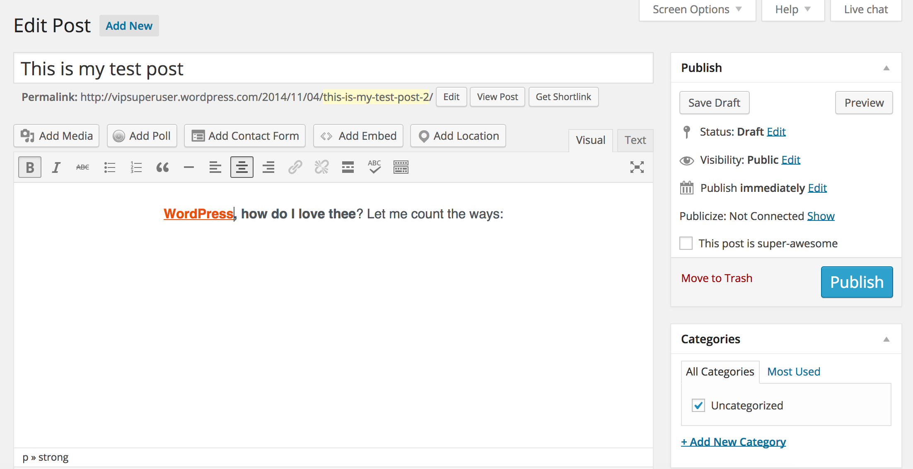
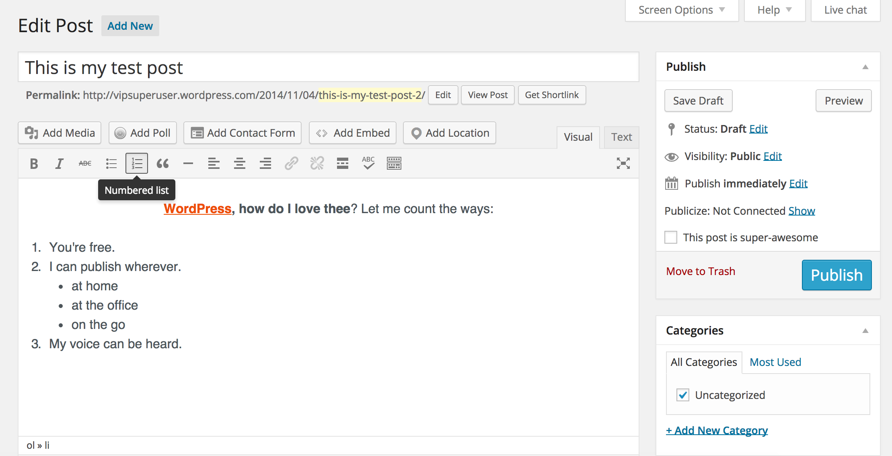
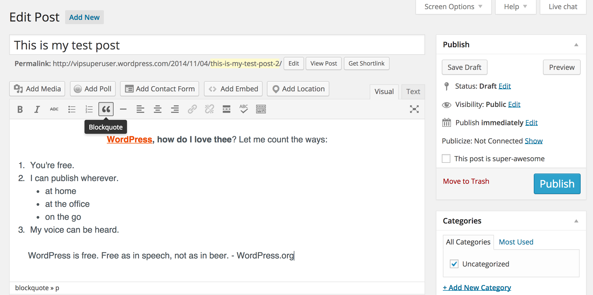
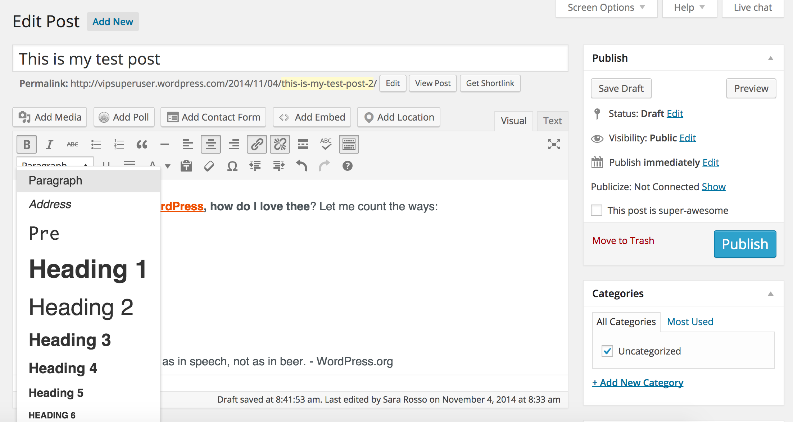
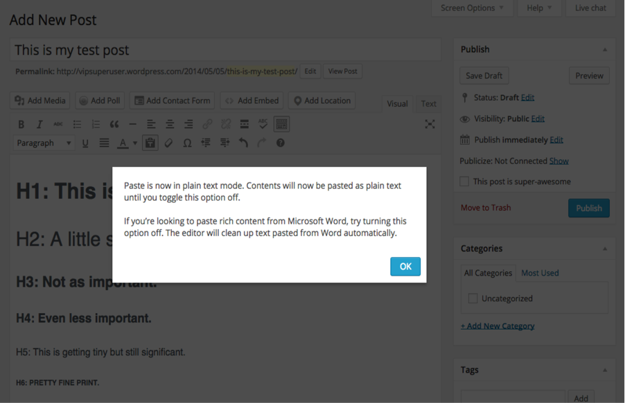
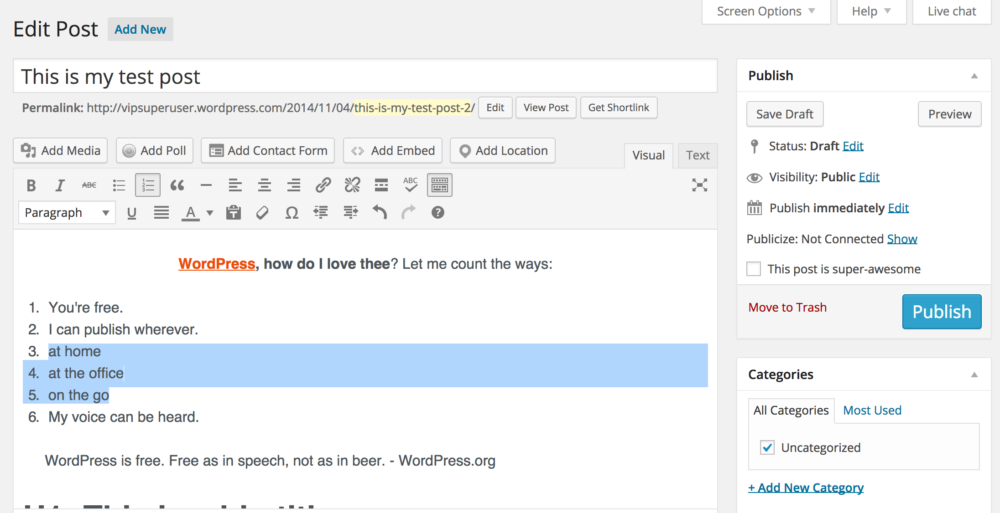
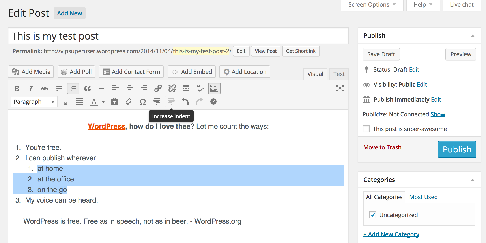
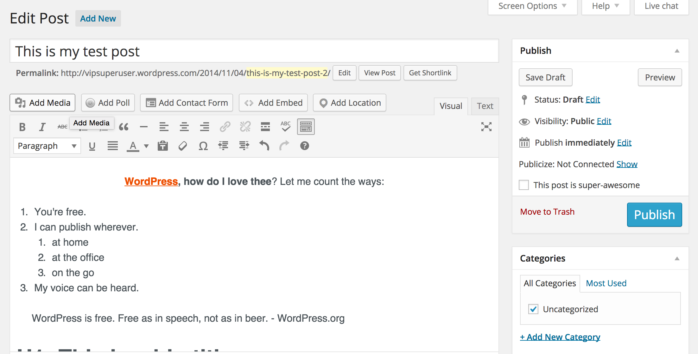

Superuser Training:
Editorial & Administrative Training for a Multi-author Site
A Note about These Slides:
These slides were originally developed by the WordPress.com VIP team for in-person training for clients and partners. As such, these slides are not intended as a self-guided training course, but rather serve as training materials for companies and instructors to accompany their own courses & explanations.
The Dashboard


User Management
Adding New Users

Exercise
Send an invite to one of your cohort members to join your WordPress.com site
Accepting an Invite
Exercise
Have the person to whom you just sent an invite accept that invite.
Permissions and Roles
Types of Roles
- Contributor
- Author
- Editor
- Administrator
Contributor
- Can create posts but not publish
- Can not upload media
- Can edit their own posts
- …but not after the post is published
- Can’t do anything else
Author
- Can create posts, including media
- Can publish their own posts
- Can edit and delete their own posts at any time
- Cannot create, edit, or delete Pages
Editor
- Can view, edit, publish, and delete any post or Page, no matter who created it
- Can moderate comments
- Can manage taxonomies (categories and tags)
Administrator
- Can access site settings, including:
- Theme and customizations
- Imports and exports
- Adding users
- Changing and removing users
- Can delete site
Limit your number of Administrators!
Removing and Demoting Users
- Demotion vs. Removal
- Don’t keep “dead” users around!
- Give users only what they need
- User removal and post authorship
Bulk User Editing
Exercise
Change roles for two of the users on your test site using the bulk user editing tool.
User Settings

Exercise
Change your account’s display name.
User Bios

Gravatars
Gravatar Public Profiles
http://gravatar.com/markel
Gravatar.com
Hovercards

Exercise
Go to Gravatar.com. Access your profile and add one link and one verified service.
Personal Settings
Changing the Interface Language
Setting a Primary Blog
Setting Your Web Address
Changing Personal Settings on self-hosted WordPress

Passwords
Resetting Your Password
Selecting a Strong Password
Strong Passwords: What Not to Do
- No single words or numbers
- No personal information
- No backwards words
- Don’t write it down if you can help it
- Don’t use the same password twice
Strong Passwords: What to Do
- At least 12 characters long
- Longer is better
- Mix letter cases
- Use at least two numbers
- Add symbols, punctuation, spaces
Strong Passwords: Passphrases
- Non-quote phrases work best
- Example:
- indigo sunset warm feelings
Two-Step Authentication
Creating Posts
Create New Post
Insert Post Title

Insert Text

Preview Post
Exercise
Add a new post. Insert the title & write a paragraph of text. Preview.Formatting Posts
Bold, Italic
Add A Link
Link Properties & Search
Alignment
Make lists
Adding a Blockquote
Preview
Exercise
Add some special formatting to the text, a link, a list, and a blockquote. Preview.Toolbar Toggle
aka The Kitchen Sink Toolbar
The "Kitchen Sink" Toolbar

The Hs
Paste as Text
Special characters
Changing your list levels
Changing your list levels
Changing your list levels
Exercise
Add some H-level formatting to your post and a few special characters. Modify your list level.Publishing Posts
Hit that Big Blue Button.
Exercise
Publish your post.Permalinks
Your Post's Permalink
Changing Permalinks After Publishing
Exercise
Change your post’s permalink, update the post, and reload the post.Distraction-Free Writing
Exercise
Write a motivational quote for yourself in distraction-free writing mode. Save it.Scheduling Posts and Post Statuses
Editing Published Date
Editing Published Status
Site Settings and Time Zones
Published Times in Your Site's Timezone

Know what time zone your site uses!
Exercise
Schedule your motivational post for one hour from now.Publicize
Publish site content to social networks via Publicize. Available in Jetpack for self-hosted sites.

Other Options
Screen Options
The More and Next Page Tags


Mastering media
Where to add media
Upload files
Drag & Drop
Upload progress
Edit Image metadata
Attachment Details
Attachment Display Settings
Alignment
Linking
Size
Exercise
Drag & drop an image into the media uploader. Edit the metadata of the image, the attachment display settings, and insert the image into your post.Editing Images
Edit Image
Edit Image
Crop: Drag then Click Crop
Updated, Cropped Image
Rotating
Rotating
Scaling
Scaling
Exercise
Crop, rotate, or scale an image already in the Media Library. Insert image into post & update.Galleries
Create a Gallery
Select gallery images
Drag to reorder
Preview of gallery
Exercise
Create a gallery.Edit Galleries
Select and Edit
Choose gallery type*
Thumbnail Grid
Tiled Mosaic
Square Tiles
Circles
Slideshow
Gallery Types
Tiled Mosaic, Square, and Circle are available via Jetpack for self-hosted sites.Exercise
Change an existing gallery into a tiled gallery & edit captions for all the images.Shortcodes & Embeds
Inserting Images from URL

Twitter into Post
Twitter into Post
Twitter into Post
YouTube into post
Change YouTube size shortcode
Change YouTube size shortcode
Facebook Embeds
Facebook Embeds
Exercise
Find a Tweet, Instagram image, YouTube video, and Facebook update to insert in your post. Use the search term “WordPress” if needed. Add an image from an external source. Update.Managing Tags and Categories
What Are Tags and Categories?
Tags & Categories: Best Practices
Tags
- short descriptors
- topical
- keyword-based
- allow for content discovery
- people, places, things
Categories
- broad
- division of content
- site-level navigation
- writing style or genre of each post
Adding a Category Inside a Post
Don’t forget to save the post!
Exercise
Add a new or existing category to a post.Renaming a Category

Exercise
Rename a category from the category page.Adding Tags to a Post
Don’t forget to save the post!
Exercise
Add several tags to a post.Archive Pages for Tags
Tags, Categories, and Permalinks
Bulk Post Management
Exercise
Add a tag to three posts at once using bulk editing.Bulk Editing Gotchas
Post Management Features
Copy Post
Copy Post
Search for Post
Request Feedback on Drafts
Request Feedback
Personalize the note

Feedback screen
Exercise
Copy another post, change something, and publish the new post.Post Revisions
Post revisions
Post revisions
Compare revisions

Exercise
Revert a post with several media / images in it to a prior version.Publish a Post by Email
Enable Secret Address
Email Text & Images
Instantly Published
Comments, Moderation, and Notifications
Comments - What and How
Setting Up Comment Defaults
Comment Settings on Posts
Exercise
Turn off comments on one post and view the post.Comment Moderation and Controls

Approve and Reply

Edit Comment

Exercise
Pick one currently-approved comment. Unapprove it. Trash it. Then undelete it and approve it.Comment Spam
Akismet: The First Line of Defense
Spotting a Spam Comment
Marking as Spam vs. Trashing

The Spam Queue
Advanced Comment Moderation
Blacklisting and Greylisting
Blacklisting works on:
- content
- name user providers
- web address user providers
- email users providers
- IP user providers
Caveats
- Beware partial matches!
- An IP address is not a person
- sending users to spam
Bulk Editing Comments
For more information

This content was compiled and & presented by WordPress.com VIP.
vip.wordpress.com
@WordPressVIP
The content in this presentation is licensed under the Creative Commons Attribution-ShareAlike 4.0 International license.